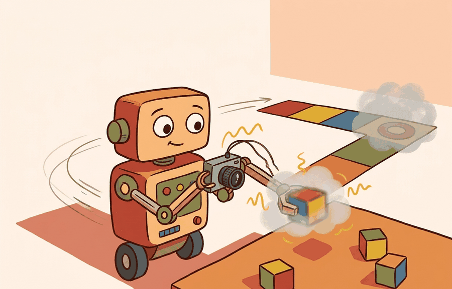

"The world is an exam where the answer key changes after every action."

Figure 8.5A: Section 8.5: Sensor noise and uncertainty models is easier to reason about when the figure shows the concept, evidence path, and action consequence in one physical situation.
A Careful Control Loop
Big Picture
Sensor noise and uncertainty models is one lens on sensors, perception hardware, and state estimation. We study it because an embodied agent needs decisions that survive contact with noisy sensors, delayed effects, and changing environments.
What This Section Develops
This section develops the technical contract for Sensor noise and uncertainty models into a usable mental model. First we define the object of study, then we connect it to the agent loop, then we test it with a compact implementation.
The key question is practical: what must the agent know, what can it observe, what action is available, and what evidence shows that the action worked?
Action Is The Test
A representation earns its place when it changes the measurable action interface. In Sensor noise and uncertainty models, the reader should keep asking which decision becomes easier, safer, or more reliable.
Theory
We can view the agent at time $t$ as receiving an observation $o_t$, maintaining an internal state estimate $\hat s_t$, choosing an action $a_t$, and observing a consequence $o_{t+1}$. The section topic changes one part of this loop, but the loop itself stays fixed.
The practical design rule is to make the interface explicit. Inputs, outputs, assumptions, timing, and failure modes should be named before a model is trained or a controller is tuned.
Mechanism
The mechanism is a sequence of transformations: observe, encode, estimate, choose, execute, monitor. Each transformation should have a measurable contract, otherwise debugging collapses into guessing.
Worked Example
Consider a simulated tabletop agent. A camera observation locates a block, a state estimator converts pixels into an approximate pose, a policy selects a motion, and a controller executes that motion. If the block slips, the loop must notice and recover rather than declare success too early.
# Sensor noise and uncertainty models: keep the section idea tied to observable evidence.
# Run this diagnostic probe before trusting the maintained library path.
import numpy as np
points_world = np.array([[0.0, 0.0, 1.0], [0.5, 0.2, 1.0]])
camera_offset = np.array([0.1, 0.0, 0.0])
points_camera = points_world - camera_offset
print(points_camera)
Code Fragment 8.5.1 computes points_camera from points_world and camera_offset, exposing how sensor placement changes the state estimate.
Library Shortcut
The hand-built fragment keeps noise and timing visible. OpenCV supports camera geometry and calibration, ROS 2 robot_localization fuses odometry and inertial streams, FilterPy is useful for Kalman and particle-filter teaching, Kalibr supports visual-inertial calibration, and Open3D helps inspect 3D observations. The shortcut removes boilerplate, but the hand-built version remains the debugging oracle.
Practical Recipe
Write the observation, action, and success metric before choosing a model.
Build a baseline that is simple enough to debug by inspection.
Add the library implementation only after the baseline behavior is understood.
Record failures as structured cases: perception error, state error, planning error, control error, or evaluation error.
Run at least one perturbation test before trusting the result.
Common Failure Mode
The common mistake is to evaluate a component in isolation and then assume the closed loop will inherit that score. Embodied systems often fail at the interfaces between components.
Practical Example
A robotics team using Sensor noise and uncertainty models should log not only final success, but intermediate observations, chosen actions, controller status, and recovery events. The logs reveal whether the method is solving the task or merely passing the easiest episodes.
Research Frontier
Frontier systems increasingly combine learned policies with structured constraints, tool use, large datasets, and simulation-driven evaluation. Claims from vendor releases should be treated as frontier watch items until independent evaluations or reproducible artifacts appear.
Self Check
Can you name the observation, state estimate, action, success metric, and most likely failure mode for Sensor noise and uncertainty models? If not, the system boundary is still too vague.
Production Pattern
Sensor noise and uncertainty models sits inside the Part II robotics contract: geometry defines where things are, kinematics defines what motion is possible, dynamics defines what motion costs, control defines how errors are corrected, and sensing defines what the agent can know on time.
Noise models should say what distribution is assumed, when it breaks, and how overconfidence is detected. This makes the section useful to students, builders, and researchers at the same time: the idea has an intuitive role, a formal interface, a runnable check, and a failure mode that can be reproduced.
Mechanism To Watch
State estimation converts imperfect observations into a belief that control can use. Preserve calibration, covariance, timestamp, frame, dropout behavior, and latency.
Library Choices And Verification Checks
Tool or Library
What It Handles
Verification Check
OpenCV
handles camera models, calibration, projection, and vision preprocessing
Verify intrinsics, distortion, image timestamp, and frame-to-camera transform.
ROS 2 robot_localization
fuses odometry, IMU, GPS, pose, and twist streams through ROS estimation nodes
Verify covariance, frame IDs, timestamps, and rejected measurement counts.
FilterPy
teaches and prototypes Kalman, extended Kalman, unscented, and particle filters
Verify process noise, measurement noise, innovation, and covariance growth.
Kalibr
supports practical work on Sensor noise and uncertainty models
Verify the library output against the hand-built baseline on one small case.
Open3D
supports practical work on Sensor noise and uncertainty models
Verify the library output against the hand-built baseline on one small case.
Implementation Recipe
Use this recipe when turning Sensor noise and uncertainty models into code, a simulator experiment, or a robot diagnostic. The point is not to use every library. The point is to keep the hand-built baseline and the maintained-tool path comparable.
Define each sensor message with units, frame, timestamp source, calibration file, and covariance meaning.
Run a static test, a slow-motion test, and a dropout test before fusing streams.
Compare the hand filter with FilterPy or ROS 2 robot_localization using identical measurements and noise settings.
Log innovation, covariance, delayed messages, rejected measurements, and downstream control effect.
Treat perception output as a belief with uncertainty, not as ground truth handed to the controller.
Latency And Evidence Gate
Before comparing results, save one artifact that contains inputs, outputs, units, timestamps, latency, configuration, seed, metric definition, and failure labels. A result is convincing only when the baseline and the shortcut were evaluated by the same script on the same panel.
# Evidence record for Sensor noise and uncertainty models.
# Fill the fields before comparing a hand-built baseline with a library run.
from dataclasses import dataclass, asdict
@dataclass
class EvidenceRecord:
section: str
topic: str
tool: str
units_check: str
latency_ms: float
metric: str
failure_label: str
record = EvidenceRecord(
section="8.5",
topic="Sensor noise and uncertainty models",
tool="OpenCV",
units_check="frames, units, and timestamps verified",
latency_ms=20.0,
metric="construct-matched success metric",
failure_label="filled after the named perturbation test",
)
print(asdict(record))
Code Fragment 8.5.2 stores topic, tool, units_check, latency_ms, metric, and failure_label so Sensor noise and uncertainty models can be compared across the hand-built baseline and the maintained-library path.
Exercise Extension
Extend the section exercise by adding one perturbation specific to Sensor noise and uncertainty models and one latency or uncertainty check. Save the result in the EvidenceRecord schema, then explain which library output you trust and why.
Failure Analysis Pattern
Sensor failures often masquerade as bad planning. Check calibration drift, unsynchronized clocks, frame mismatch, covariance overconfidence, and latency before changing the policy. For this section, first reproduce one tiny case by hand, then rerun it through OpenCV, ROS 2 robot_localization, FilterPy, Kalibr, Open3D. If the two disagree, inspect conventions and timing before changing th
Technical Core
Sensor noise and uncertainty models needs a topic-native core: variables, equations or system contracts, an algorithmic procedure, an expected output, and a failure diagnosis. Figure 8.5.T summarizes the chain this section must preserve when moving from a teaching example to a real embodied system.
Figure 8.5.T: The technical core for Sensor noise and uncertainty models connects assumptions, model, algorithm, evidence, and failure analysis.
Shows the practical library route after the mechanism is understood.
# Technical-core evidence record for Sensor noise and uncertainty models.
# Expected: a method-specific trace with assumptions, metric, and failure label.
record = {
"section": "8.5",
"technical_core": "state estimation and sensing",
"method": "Prediction, update, and sensor-fusion audit",
"evidence": "same-config trace with expected output and failure label",
"tools": "OpenCV, ROS 2 sensor messages, GTSAM, filterpy, NumPy, Open3D",
}
print(record)
Code Fragment 8.5.T records the expected technical evidence for Sensor noise and uncertainty models: method, tool path, artifact, and failure label.
Expected output is a posterior covariance that contracts after informative measurements and expands under uncertainty. A tiny covariance with large innovations is an overconfidence bug, not a strong estimator.
Failure Mode To Test
A fusion result fails when covariance shrinks without better measurements, timestamps are silently resampled, or a camera, IMU, lidar, and tactile stream are fused in inconsistent frames.
e model.
Section References
Canonical support for Sensor noise and uncertainty models: Modern Robotics; Murray, Li, and Sastry; Siciliano et al.; LaValle; and official documentation for Drake, MuJoCo, Pinocchio, CasADi, python-control, GTSAM, ROS 2, and OpenCV as applicable.
Use these sources to verify notation, frames, units, solver assumptions, and maintained-library behavior.
Key Takeaway
Sensor noise and uncertainty models is useful when it makes the perception-action loop more reliable, not when it merely adds a more impressive model name.
Exercise 8.5.1
Design a method-matched experiment for Sensor noise and uncertainty models. Specify the environment, observations, actions, metric, one perturbation, and the library output you would compare against the hand-built baseline.